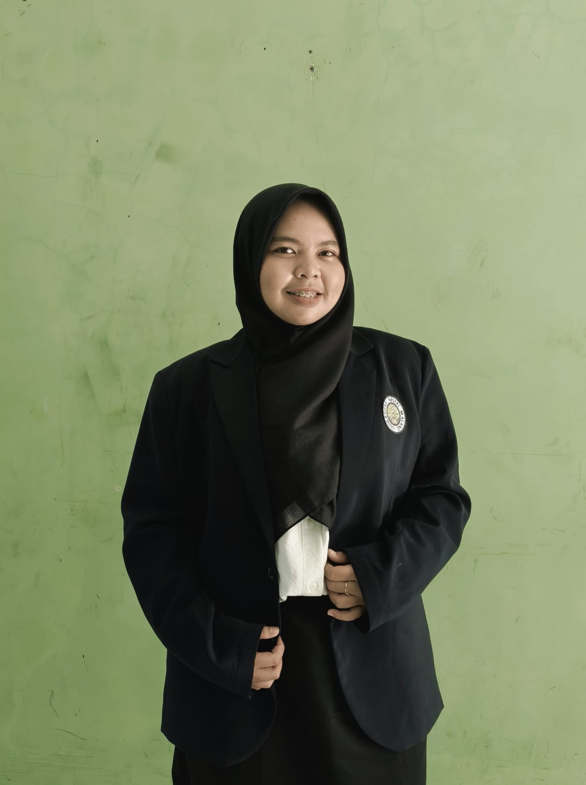

Visi Menjadi Guru Profesional
Pernyataan komitmen sebagai calon pendidik untuk terus tumbuh, berinovasi, dan memberikan dampak positif dalam dunia pendidikan Informatika.
Visi untuk Pendidikan di Indonesia
Berkontribusi dalam membentuk generasi yang berkarakter, berdaya saing, dan adaptif terhadap perkembangan zaman melalui pembelajaran Informatika yang interaktif dan bermakna.
Visi Sebagai Calon Guru
Menjadi pendidik yang profesional, reflektif, dan adaptif dalam menghadirkan pembelajaran yang bermakna. Pembelajaran tersebut diharapkan dapat mendukung peserta didik untuk berkembang sesuai dengan potensinya.

Mengubah Visi Menjadi Aksi
Mewujudkan Visi melalui Praktik Pembelajaran
Visi diwujudkan melalui berbagai upaya dalam merancang, melaksanakan, serta mengevaluasi pembelajaran. Setiap upaya diarahkan untuk mengembangkan kompetensi sebagai guru sekaligus menghadirkan pengalaman belajar yang sesuai dengan kebutuhan peserta didik.
Mempelajari Praktik Baik Pembelajaran
Mengamati praktik baik dari dosen dan guru di sekolah mitra untuk mengembangkan kompetensi mengajar. Pengalaman tersebut menjadi bahan untuk memperkaya wawasan dalam merancang pembelajaran.
Menyelaraskan Strategi Pembelajaran
Memilih strategi dan media pembelajaran yang sesuai dengan tujuan pembelajaran. Asesmen disusun untuk mengetahui ketercapaian belajar serta menjadi dasar dalam memperbaiki pembelajaran.
Mengaitkan Pembelajaran dengan Kehidupan
Menghubungkan materi Informatika dengan permasalahan dalam kehidupan sehari-hari. Hal tersebut membantu peserta didik memahami penerapan pengetahuan dalam situasi yang dekat dengan mereka.
Memanfaatkan Teknologi untuk Berkarya
Memanfaatkan teknologi untuk mencari informasi dan mengeksplorasi materi pembelajaran. Peserta didik juga diarahkan untuk menggunakan teknologi dalam menghasilkan karya sederhana.
Membimbing Penggunaan Teknologi secara Etis
Membimbing peserta didik untuk memeriksa kembali informasi dan menghargai karya orang lain. Pembiasaan tersebut membantu peserta didik menggunakan teknologi secara bijaksana. Penggunaannya juga diarahkan agar tetap etis dan bertanggung jawab.
Merefleksikan Proses Pembelajaran
Melakukan refleksi setelah pembelajaran untuk mengetahui hal yang sudah berjalan dengan baik. Umpan balik digunakan sebagai dasar untuk meningkatkan kualitas pembelajaran berikutnya.
Prinsip dalam Menjalankan Peran
Menjaga Arah dalam Setiap Langkah
Visi menjadi arah dalam menjalankan peran sebagai calon guru. Untuk tetap berada pada arah tersebut, diperlukan nilai dan sikap yang menjadi pegangan dalam menghadapi berbagai situasi selama proses pembelajaran.
Terbuka terhadap Perubahan
Menyadari bahwa kebutuhan peserta didik dan perkembangan pendidikan terus berubah. Sikap terbuka membantu menyesuaikan diri tanpa kehilangan tujuan utama dalam mendidik.
Menjunjung Nilai dan Etika
Menjadikan nilai, etika, dan tanggung jawab sebagai dasar dalam menjalankan peran sebagai pendidik. Hal tersebut menjadi pedoman dalam bersikap serta mengambil keputusan yang berkaitan dengan peserta didik.
Menghargai Setiap Proses
Memandang keberhasilan pembelajaran sebagai proses yang membutuhkan waktu dan pengalaman. Setiap pengalaman menjadi bagian dari proses untuk mengenali kekuatan dan hal yang masih perlu dikembangkan.
Menjaga Semangat untuk Belajar
Memandang proses menjadi guru sebagai perjalanan yang terus berkembang. Kesediaan untuk belajar menjadi dasar untuk menghadapi tantangan dan meningkatkan kualitas diri sebagai pendidik.
— Indana Zulfa Semester 2 • PPG Prajabatan 2026"Saya berkomitmen untuk menjadi pendidik yang tidak hanya mengajar, tetapi juga membimbing, menginspirasi, dan memberdayakan setiap siswa untuk menjadi individu yang berkompeten, berkarakter, dan berkontribusi positif bagi masyarakat."